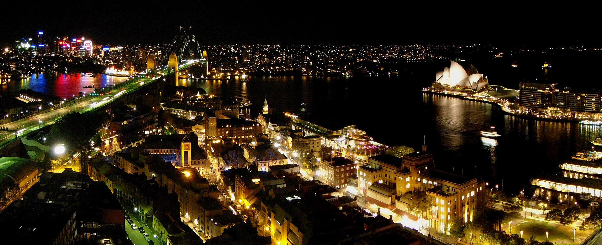
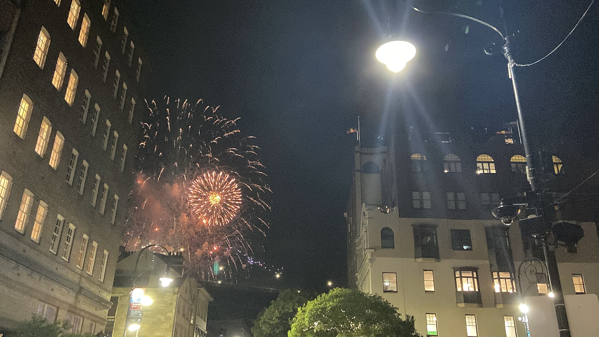

카드를 누르면 아래 날짜별 상세 일정으로 이동합니다.
카드를 누르면 시간대별 일정·맛집·지도·비용 등 상세 내용이 펼쳐집니다. 가고 싶은 관광지(Art Gallery, Observatory, Balmoral, Watsons Bay, Bald Hill·Sea Cliff Bridge·Wollongong, Newtown·Grounds, St Mary's 등)와 추가로 찾아본 장소(MCA, Château Tanunda 시음장, 해양박물관, Fish Market, Paddy's Markets, 호주 박물관 등)를 가까운 곳끼리 묶어 반영한 통합 일정입니다.
🎆 12월 31일 Sydney New Year's Eve 2026 · 예약/응모 중요

Cahill Expressway는 세션을 선택할 수 있어(자정만 골라도 됨) "안전하게 귀가" 목표에 더 적합합니다. Forecourt는 낮 12시부터 자정까지 나갈 수 없어 사실상 하루 종일(9시간+) 머물러야 하는 트레이드오프가 있습니다.
1순위: Cahill Expressway(응모 마감, 당첨 여부 대기) → 2순위: Opera House Forecourt(12/26 10am) → 3순위: 무료 비지정 장소
| Cahill Expressway | Opera House Forecourt | |
|---|---|---|
| 예약 | 응모(추첨) | 선착순 등록 |
| 시기 | 2026-09-03~10-02 | 2026-12-26 10:00~ |
| 비용 | $0 | $0 |
| 현재 상태 | 응모 마감 — 10/12~12/4 당첨 이메일 확인 | 아직 예약 불가 |
Cahill 자정 세션: 21:45~23:45 입장 / Forecourt: 12:00~15:00 입장(재입장 불가)
두 장소 모두 개인 도시락/음식 반입은 가능하지만, Cahill Expressway는 주류 반입·판매 전면 금지이며 Opera House Forecourt는 BYO 주류 불가(현장 라이선스 바 구매만 가능)입니다.
두 곳 모두 장애인 화장실 비치 확인됨. Opera House Forecourt는 성인용 기저귀 교체시설도 있음(호이스트 없음).
| 시간 | 활동 | 이동방법 |
|---|---|---|
| 12:30 | 숙소 출발, 도시락/간식/물 준비 | 버스546 → Parramatta → 열차 |
| 14:00 | Town Hall 또는 Martin Place 하차, 시내 산책 및 이른 저녁 | 도보 |
| 19:00 | 9pm 세션은 생략, 자정 세션 입장(21:45)까지 대기 또는 무료구역서 9pm 관람 후 이동 | 도보 |
| 21:45 | Cahill Expressway 입장 | 도보 |
| 24:00 | 자정 불꽃놀이 관람 | - |
| 00:15~00:30 | 관람 종료, Town Hall/Central 방향 도보 이동 시작 | 도보(혼잡, 30~60분+ 예상) |
| 01:00~01:30 | Town Hall/Central역에서 T1 열차 탑승 → Parramatta | 열차(심야 증편, Opal 앱 실시간 확인) |
| 02:00경 | Parramatta 도착 후 Oatlands 숙소까지 마지막 구간 | 택시/Uber(짧은 구간) |
예약 필요 항목 준비 중…
예약할 시기별로 지금 바로(10월) / 11월 / 12월 / 출발 직전·여행 중으로 나눴습니다. 비용은 성인 3명 기준 AUD 추정치이고, 대부분 2026-09~10월 조회 값이라 결제 전 공식 사이트에서 다시 확인하세요. 체크 상태는 이 브라우저(localStorage)에 저장되어 다시 열어도 유지됩니다.
출발 1주 전 확인(예약 아님): 날씨로 1/2·1/6 렌터카 날짜가 바뀌는지, 1/4 Lake Parramatta 수영구역 운영·수질 공지. 예약 불필요: Opera Bar·MCA·Art Gallery·Botanic Garden·국립해양박물관 상설전·호주 박물관, Mamak(예약 불가).
숙소에서 걸어갈 수 있는 거리(미검증), 평일 주간 약 9분 간격으로 546번보다 자주 운행(간접 확인). 도보가 3~4배 길어 아이·짐 많은 날은 불리하지만 배차가 촘촘해 시간이 급할 때 유리.
T1 노선 주요 환승역. Parramatta → Central 약 23~30분. T1은 Parramatta → Central → Town Hall → Wynyard까지 직행하며 Circular Quay역에는 서지 않습니다 — Circular Quay는 Wynyard에서 도보 약 10분이거나 Town Hall/Central에서 City Circle(T2/T3/T8)로 갈아타세요.
| 목적지 (날짜) | 추천 | 대중교통 경로 | 대중교통 | 차량 |
|---|---|---|---|---|
| Parramatta (12/25·26, 1/1) | 버스 | 버스546 | 25~35분 | 10~15분 |
| Circular Quay·Opera House·Rocks (12/27) | 대중교통 | 546 → Parramatta → T1 Wynyard(도보 10분) 또는 Town Hall 환승 | 1시간 10~20분 | 40~50분(주차 비추천) |
| Art Gallery·Botanic Garden (12/28) | 대중교통 | 546 → Parramatta → T1 → City Circle 환승 → St James | 1시간 10~20분 | 40~50분 |
| Bondi Beach (12/29) | 대중교통 | 546 → Parramatta → T1 → T4 Bondi Junction → 버스 333/380 | 1시간 30~45분 | 50~60분 |
| Bondi → Watsons Bay (12/29) | 버스 | 버스 380 | 20~30분 | 약 15분 |
| Watsons Bay → 숙소 (12/29) | 페리 | F9 페리 → Circular Quay → Wynyard T1 → 546 | 1시간 40분~2시간 | 55~65분 |
| Taronga Zoo (12/30) | 대중교통+페리 | 546 → Parramatta → T1 Wynyard/Town Hall 환승 → Circular Quay → F2 | 약 1시간 30분 | 45~55분 |
| Taronga → Balmoral (12/30) | Uber | (버스 238은 배차 드묾) | - | 약 10분 |
| Blue Mountains·Leura (1/2) | 렌터카 | 546 → Parramatta → Blue Mountains Line | 2시간 10~30분 | 80~100분 |
| Manly (1/3) | 대중교통+페리 | 546 → Parramatta → T1 Wynyard/Town Hall 환승 → Circular Quay → F1 | 1시간 40~50분 | 45~55분 |
| Lake Parramatta (1/4) | Uber | 숙소 → Uber 약 10분 / Parramatta → 버스546으로 귀가 | 귀가 약 25분 | 약 10분 |
| The Grounds of Alexandria (1/5) | 대중교통 | 546 → Parramatta → T1 Central → T8 Green Square → 도보 12분 | 1시간 15~25분 | 40~45분 |
| Newtown → 숙소 (1/5) | 대중교통 | Newtown역 → T2 → Strathfield 환승 → T1 → 546 | 1시간 05~15분 | 35~45분 |
| Bald Hill·Sea Cliff Bridge·Wollongong (1/6) | 렌터카 | 열차+South Coast Line (Bald Hill은 급경사 도보, 비추천) | 2시간 30분+ | Bald Hill 75~90분 / Wollongong→숙소 80~100분 |
| Observatory·Barangaroo·해양박물관 (1/7) | 대중교통 | 546 → Parramatta → T1 Wynyard 직행 → 도보 10분 | 1시간 05~15분 | 40~50분 |
| 해양박물관 → Fish Market → Paddy's Markets (1/7) | 경전철 | Pyrmont Bay → L1 → Fish Market → L1 → Paddy's Markets → 귀가는 Central역 T1 | 구간별 5~15분 / 귀가 약 1시간 | - |
| Hyde Park·St Mary's·Australian Museum·QVB (1/8) | 대중교통 | 546 → Parramatta → T1 Town Hall | 약 1시간 | 40~50분 |
| 시드니 공항 (12/25, 1/9) | Uber/택시 | T8 공항선 → Central → T1 → 546 | 약 1시간 30분 | 40~50분 |
대중교통 시간은 546번·환승 대기 포함 대략치, 차량은 체증 없는 낮 시간 추정치입니다. ⚠ 출발 전 Trip Planner/Google Maps로 확인하세요.
일일 상한: 평일(월~목) 1인 $19.30, 금~일 및 공휴일 1인 $9.65 · 주간 상한 1인 $50(월~일). 2026년 7월부터 12개월간 2025년 요금으로 동결 발표. Opal 카드 또는 컨택리스 신용/체크카드 모두 사용 가능하며, 상한은 카드(기기)별이라 3명이 각자 다른 카드/폰으로 태그해야 합니다. 이 일정에서는 12/28~1/3 주와 1/4~1/10 주에 주간 상한에 도달해 12/31 밤·1/1·1/3, 1/8 오후·1/9 대중교통이 무료가 됩니다(3인 약 $101 절감). 1/7 경전철 L1도 Opal로 같은 상한에 포함됩니다. ⚠ 여행 직전 Opal 앱에서 재확인.
T1 노선이 Parramatta~시내 핵심축. 1/7에는 Pyrmont Bay → Fish Market → Paddy's Markets 구간에 경전철 L1을 탑니다. 페리는 F1(Manly), F2(Taronga), F3(Parramatta River, 55~80분·관광용), F9(Watsons Bay) 등을 이 일정에서 사용.
Sydney Metro West는 2032년 완공 목표로 여행 기간 중 운행하지 않음.
환승 많고 편도 1.5시간 이상인 구간(Bondi 등)은 대중교통이 Uber보다 저렴하지만 훨씬 오래 걸립니다. 날짜별로 대중교통/Uber/렌터카 중 권장 방식을 각 Day 카드에 명시했습니다. NYE 당일은 CBD→Oatlands 직행 Uber를 시도하지 말고 Parramatta까지 열차, 이후 짧은 구간만 Uber/택시를 이용하세요.
2027-01-02 (Blue Mountains·Leura)와 2027-01-06 (Bald Hill·Sea Cliff Bridge·Wollongong) 두 날 렌터카 추천. 두 곳 모두 명소가 흩어져 있고 대중교통으로는 편도 2시간 이상 + 현지 이동이 불편합니다. 그 외 날짜는 대중교통이 편리하고 도심 주차·혼잡 문제로 오히려 비효율적입니다.
야외 일정 4개와 실내 비중이 높은 보충일 2개를 짝지어 두었습니다. 맑은 날엔 야외 일정을, 비 오는 날엔 보충일을 배치하세요. 렌터카 날(1/2, 1/6)을 옮길 때는 렌터카 예약일도 함께 변경해야 합니다.
| 야외 일정 | 날짜 | 비 오면 교환할 날 |
|---|---|---|
| Bondi + Watsons Bay + 페리 | 12/29 | 1/7 Darling Harbour 쪽 박물관·시장(실내 비중 高) 또는 1/5 Newtown·Grounds |
| Blue Mountains + Leura (렌터카) | 01/02 | 1/5 Newtown·Grounds |
| Manly Beach | 01/03 | 1/5 Newtown·Grounds 또는 1/7 Darling Harbour 쪽 |
| Bald Hill + Sea Cliff Bridge + Wollongong (렌터카) | 01/06 | 1/5 Newtown·Grounds 또는 1/7 Darling Harbour 쪽 (둘 다 하루 차이라 교환이 쉬움) |
보충 슬롯: 1/5 Newtown·Grounds(비 와도 진행 가능), 1/7 Darling Harbour 쪽 박물관·시장(대부분 실내)을 우천 시 대체지로 우선 활용하세요. 단, 1/7 일정을 다른 날로 옮길 때는 Paddy's Markets 휴무일(월·화)을 피하세요.
각 날짜에 이미 배치된 점심·카페·저녁을 날짜순으로 모았습니다. 상세(가격·예약·지도)는 각 항목 또는 날짜별 카드를 참고하세요.
성인 3명 기준, 국제선 항공료·Oatlands 숙박비는 제외한 금액입니다. 환율 1 AUD = 950원(예시 고정환율) 단순 환산이며, 실제 여행 시 환율 및 현지 가격에 따라 달라질 수 있습니다.
절약형: 선택 입장료(Opera 투어·아쿠아리움·Icebergs·Sydney Tower Eye) 전부 제외, 식사도 저렴한 대안 선택, Château Tanunda는 $20 코스. 일반형: 이 계획서의 "기본안" 그대로. 여유형: 선택 항목 모두 포함, 12/28 Cafe Sydney 등 더 비싼 대안 선택, Château Tanunda는 $70 코스(1/8 Aria 미포함 — 고르면 3인 약 +$600~850). 렌터카(1/2, 1/6)·NYE 심야 택시·공항 이동(12/25, 1/9) 같은 변동성 큰 항목은 실제 견적에 따라 전체 금액이 달라질 수 있습니다. 세 단계 모두 Opal 주간 상한($50/주)이 반영된 금액입니다(3인 약 $101 절감). 직전 일정(약 $5,568) 대비 약 -$625로, 1/4 Port Stephens 투어를 쉬어 가는 날로 바꾼 영향(-$750)이 가장 크고 12/27 시음이 +$120입니다.
준비물 준비 중…
체크 상태는 이 브라우저에 저장됩니다.
모든 사진은 Wikimedia Commons에서 재사용 조건(라이선스)이 명확한 파일만 선별해 사용했습니다. CC BY / CC BY-SA 조건에 따라 저작자를 표기합니다.
| 사진명 | 저작자 | 출처 | 라이선스 |
|---|---|---|---|
| opera_house.jpg — Sydney Opera House + Harbour Bridge | J woodward | Wikimedia Commons | CC BY-SA 3.0 |
| botanic_garden.jpg — Royal Botanic Garden | Maksym Kozlenko | Wikimedia Commons | CC BY-SA 3.0 |
| bondi.jpg — Bondi Beach | Maksym Kozlenko | Wikimedia Commons | CC BY-SA 4.0 |
| taronga_zoo.jpg — Taronga Zoo | Robert Linsdell | Wikimedia Commons | CC BY 2.0 |
| nye_fireworks.jpg — Sydney NYE Fireworks(2024년 촬영, 대표이미지) | JustARandomEditor123 | Wikimedia Commons | CC BY-SA 4.0 |
| blue_mountains.jpg — Blue Mountains / Three Sisters | Dietmar Rabich | Wikimedia Commons | CC BY-SA 4.0 |
| manly.jpg — Manly Beach | Hardlinerr | Wikimedia Commons | CC BY-SA 4.0 |
| darling_harbour.jpg — Barangaroo Reserve | MDRX | Wikimedia Commons | CC BY-SA 4.0 |
| watsons_bay.jpg — Watsons Bay / The Gap | Ymblanter | Wikimedia Commons | CC BY-SA 4.0 |
전체 출처 기록은 image_credits.md 파일을 참고하세요.